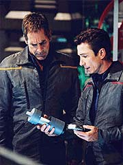
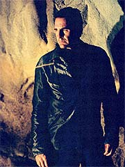
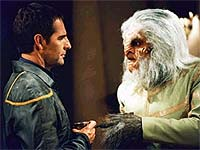
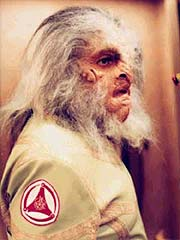
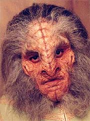

|
MANCHETE
DO EPISDIO
Histria
convencional revela que
nem todos os Xindis so inimigos
Episdio
anterior | Prximo
episdio
Sinopse:
Dois Xindis-reptilianos discutem o status da arma desenvolvida sob o comando do Xindi-humanide Degra. Os aliengenas esperam estar prontos para um teste em poucas semanas.
Archer, T'Pol e Reed esto no centro de comando, discutindo sobre a informao dada a eles por Tarquin. O capito decide checar um planeta colonizado pelos Xindis para verificar se parte da arma estava realmente sendo contruda l. Reed e Hayes o acompanham no grupo de descida.
 Na superfcie, eles encontram um complexo ocupado por Xindis-preguias e decidem entrar. L dentro, Reed encontra um composto radioltico, chamado
kimosita, pelos Xindis-preguias. Eles transportam para a Enterprise um conteiner cheio, para anlise. Enquanto isso, quando Reed sugere que eles destruam o complexo, Archer diz a ele que quer descobrir para onde eles esto enviando a
kimosita.
Um dos Xindis mais velhos vai para sua casa, onde confrontado pelos humanos. Archer pergunta da
kimosita, e Gralik diz a ele que trata-se de um istopo multifsico com muitas aplicaes. Archer diz que a
kimosita est sendo usada para construir uma arma que ir extinguir sua raa. Gralik fica abalado pela revelao.
T'Pol e Trip teleportam para a superfcie um pedao da sonda Xindi que atacou a Terra. Archer mostra a Gralik que ela tem a mesma assinatura quntica da
kimosita, mas o aliengena insiste em dizer que no sabe nada sobre a tal arma que os humanos procuram.
Enquanto isso, Trip e Phlox desmontam a arma de mo Xindi que foi capturada quando os aliengenas invadiram a Enterprise, algumas semanas antes. A arma tem um componente orgnico, que acaba se revelando ser uma clula de energia. Phlox a leva para a enfermaria para estud-la.
Archer descobre de Gralik que houve uma guerra civil no mundo natal Xindi, que levou a sua destruio. Ele tambm aprende que houve uma sexta espcie: os avianos, que esto extintos por causa da guerra. O resto das espcies est espalhado pela Extenso.
 Reed e Hayes dizem a Archer que algo diferente est acontecendo no complexo. T'Pol contata o capito para dizer que uma nave acaba de entrar em rbita, e ela tem a mesma configurao da nave que os atacou. Archer descobre de Gralik que os reptilianos esto l para pegar o ltimo carregamento de
kimosita. Gralik se oferece para obter informao sobre a arma para o capito da Enterprise.
Dois outros Xindis-preguias vo at a casa de Gralik, procurando por ele. Archer no permite que ele responda e, junto com Reed e Hayes, leva o aliengena para a floresta. Os Xindis-reptilianos enviam dois batedores robticos para encontr-lo. Archer destri um deles, mas o outro consegue escapar.
Na Enterprise, Trip tenta disparar o rifle na sala de armamentos, aps estabelecer quatro campos de fora para conter os danos. No entanto, ela no dispara e comea a emitir um barulho. Trip conclui que ir se auto-destruir e corre para teletransport-la para o espao, onde ela explode.
Em terra, Gralik leva os humanos a uma caverna, onde ele pergunta a Archer se o humano ir mat-lo. O capito diz que desenvolveu um plano alternativo. Gralik volta instalao e instrui seus colegas a proceder com um novo teste de refinamento. O grupo de descida recebe um conteiner de
kimosita da Enterprise, que T'Pol e Hoshi modificaram com uma assinatura radioltica, com a qual podero rastrear o futuro paradeiro do carregamento.
 Archer entra na nave e troca um dos contineres pelo modificado. Mais tarde, quando o capito e Gralik esto bebendo juntos, ele diz ao Xindi-preguia que a nave entrou em algum tipo de portal energtico e o sinal de rastreamento foi perdido. Gralik diz que o alcance do portal de apenas uns poucos anos-luz; ele deve continuar procurando.
Comentrios:
Em "The Shipment", Archer descobre que nem todos os Xindis necessariamente so seus inimigos. Embora a frmula utilizada seja mais ou menos convencional, um dado interessante, com potencial desenvolvimento no futuro do arco da temporada.
Alis, um dos destaques positivos do episdio a definitiva assumida do esforo de narrativa continuada, com uma histria que se espalha por vrios episdios. Nos cinco primeiros esforos da temporada, houve um misto de preparao e narrao episdica. A partir de
"Exile", surge uma diretriz de "emendar" as histrias com maior intensidade --da a apario de um "Last time on
Enterprise..." logo na abertura.
Do ponto de vista narrativo, a histria o "pay-off" do trabalho de Hoshi em
"Exile". Archer descobre uma instalao comandada pelos Xindis-Preguias, responsvel pela produo de kimosita --uma substncia que est sendo comprada por Degra e seus asseclas para a fabricao da arma que ser usada na Terra.
A surpresa que Gralik Durr, o lder dos processadores de kimosita, no sabe por que Degra est comprando a mercadoria. Ao ser informado por Archer, ele prontamente se mostra contrrio ao assassinato injustificado dos humanos e se prope a ajudar o capito da Enterprise a descobrir onde a arma est sendo construda.
Do ponto de vista dos tripulantes da Enterprise, vemos um dilema interessante: Archer deve destruir o posto Xindi, mesmo considerando que eles podem ser inocentes, ou deve acreditar na boa-f de Gralik e permitir que o Preguia os ajude? uma questo sem resposta fcil, que Malcolm Reed expe ao capito.
 Infelizmente, no vemos Archer sofrendo muito com o dilema. E pior ainda foi o tratamento dado ao outro lado da equao: como Gralik compra a histria dos humanos to rapidamente, a ponto de arriscar o prprio pescoo sabotando Degra? totalmente irreal.
Uma das desculpas para essa atitude o conhecimento de Gralik de que os Xindis no so exatamente uma populao unificada e harmoniosa, mas sim um povo dividido entre suas sub-espcies e que j at mesmo levou uma delas extino --os Xindis-Aves um dia j foram to numerosos quanto os demais, mas acabaram mortos na destruio do mundo natal de sua espcie.
Mas no cola. Ainda mais depois de Archer invadir o complexo e apontar uma arma primeiro e fazer perguntas depois. Quem confiaria num sujeito que tranca voc no seu escritrio e faz ameaas, chamando-o de genocida?
Por esse tratamento primitivo do que poderia ser um dilema interessante, o episdio acaba pecando. Felizmente, isso no chega a torn-lo irritante. O ritmo da histria bom e o que aprendemos sobre os Xindis de certa maneira compensa pela frustrao de ver um enredo que segue demais o fluxo previsvel da histria, sem muitas reviravoltas ou conflitos internos nos personagens.
O mais irnico que, no final, a nave de Degra acaba despistando a Enterprise e Archer termina exatamente o episdio como comeou --sem nenhuma pista de onde a arma Xindi est sendo construda. Seu nico aprendizado foi o de que ele no pode sair por a matando indistintamente todos os Xindis --talvez seja possvel at mesmo dialogar com eles. Nesse nvel sutil, o episdio foi relevante para o arco.
 Tirando isso, entretanto, sobre muito pouco a se dizer. Um roteiro burocrtico e sem profundidade leva a tripulao, aps 42 minutos, sua prxima parada, sem muito a ser aproveitado da jornada. E o fato de no sabermos exatamente qual essa parada j d a entender que teremos um interldio no fluxo do arco, para mais um segmento episdico.
Numa nota de rodap, os valores de produo da srie mantm aqui seu padro de excelncia. Mas tenho dificuldades em me convencer de que os Xindis-Preguias vistos aqui --figurino includo-- parecem muito mais Telaritas do que os Telaritas de
"Bounty", no fim da temporada passada...
Citaes:
Archer - "By destroying this complex, we'll be confirming their worst fears about humanity."
("Ao destruir esse complexo, estaremos confirmando seus piores medos sobre a humanidade.")
Reed - "Let's not forget the seven million people who were killed."
("No nos esqueamos dos sete milhes de pessoas que foram mortos.")
Gralik - "I'm proud of my craft, captain. I've practiced it for many years. I won't let my work be corrupted in this way. Seven million people. If I'd chosen my clients more carefully, that tragedy might not have happened. I don't intend to let it happen again."
("Tenho orgulho do meu trabalho, capito. Eu o pratico h muitos anos. Eu no deixarei que ele seja corrompido desse jeito. Sete milhes de pessoas. Se eu tivesse escolhido meus clientes com mais cuidado, essa tragdia poderia no ter acontecido. No pretendo deixar que acontea de novo.")
Gralik - "If everything you've told me is true of the attack on your world, then I hope you remember that not all Xindi are your enemy."
("Se tudo que voc me disse verdade do ataque ao seu mundo, ento eu espero que voc se lembre de que nem todos os Xindis so seus inimigos.")
Trivia:
 As filmagens tomaram sete dias, principalmente nos cenrios representando a colnia dos Xindis-preguias, com a casa de Gralik, uma floresta e uma caverna.
As filmagens tomaram sete dias, principalmente nos cenrios representando a colnia dos Xindis-preguias, com a casa de Gralik, uma floresta e uma caverna.
A trilha do episdio foi composta pelo veterano Jay Chattaway.
John Cothran Jr. apareceu como o capito Nu'Daq em
"The Chase" (A Nova Gerao), Telok em "Crossover"
(Deep Space Nine) e o doutor Bennington Biraka no game "Star Trek: Borg".
Steven Culp e Randy Oglesby reprisaram seus papis recorrentes em
Enterprise; ambos estrearam em "The
Xindi".
Ficha
tcnica:
Escrito por Chris Black & Brent V. Friedman
Direo de David Straiton
Exibido em 29/10/2003
Produo:
059
Elenco:
Scott
Bakula como Jonathan Archer
Jolene Blalock como
T'Pol
John Billingsley
como Phlox
Anthony Montgomery
como Travis Mayweather
Connor Trinneer como
Charlie 'Trip' Tucker III
Dominic Keating como
Malcolm Reed
Linda Park como Hoshi Sato
Elenco convidado:
Steven Culp como major Hayes
John Cothran Jr. como Gralik
Randy Oglesby como Degra
John Eddins como Xindi-reptiliano
Jack Alsted como preguia 2
Sam Witwer as preguia 3
Episdio
anterior | Prximo
episdio
|